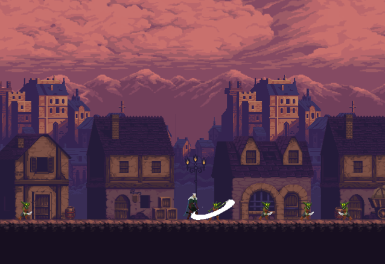
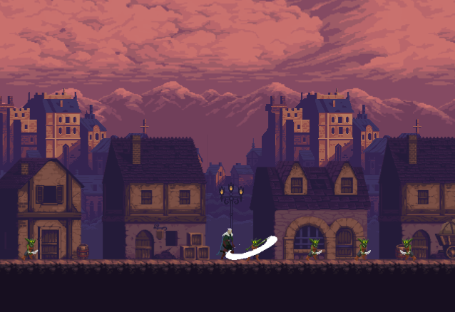

Dark Legacy
Há séculos, um poderoso necromante, conhecido como a Lord Mhaldazzar, governava a região de Valáquia com punho de ferro. No entanto, um grupo de caçadores destemidos liderados pelo lendário Richard Valencourt, conseguiram derrotá-lo e selá-lo em um sono eterno. Por décadas, a região viveu em paz, mas recentemente, rumores de que o selo que mantinha o necromante adormecido estava enfraquecendo e começou a se romper. Em meio ao caos, criaturas das trevas emergiram dos locais mais sombrios da terra, ameaçando mergulhar o mundo na escuridão novamente.
O jogador assume o papel de Wuthir Valencourt, um descendente distante de Richard, que herdou a habilidade e a coragem de seus antepassados. Conforme as trevas se espalham pela Valáquia, Wuthir é convocado para enfrentar o mal que se ergue mais uma vez. A jogabilidade mistura elementos de aventura, plataformas e hack and slash, enquanto Wuthir viaja por vastos castelos góticos, florestas sombrias e cidades abandonadas, enfrentando hordas de criaturas demoníacas. O jogador é levado a uma corrida contra o tempo, enfrentando chefes poderosos e coletando relíquias para ajudá-lo em sua jornada.
Features

Breve descrição da feature 1.
Labore et anim incididunt aute deserunt incididunt. Eu cillum esse exercitation consectetur dolore aliqua voluptate incididunt sit tempor. Labore adipisicing deserunt eu et est anim commodo exercitation minim anim fugiat fugiat magna deserunt. Elit proident cupidatat sit deserunt ipsum.
Breve descrição da feature 2.
Labore et anim incididunt aute deserunt incididunt. Eu cillum esse exercitation consectetur dolore aliqua voluptate incididunt sit tempor. Labore adipisicing deserunt eu et est anim commodo exercitation minim anim fugiat fugiat magna deserunt. Elit proident cupidatat sit deserunt ipsum.
Breve descrição da feature 3.
Labore et anim incididunt aute deserunt incididunt. Eu cillum esse exercitation consectetur dolore aliqua voluptate incididunt sit tempor. Labore adipisicing deserunt eu et est anim commodo exercitation minim anim fugiat fugiat magna deserunt. Elit proident cupidatat sit deserunt ipsum.
Screenshots

 
